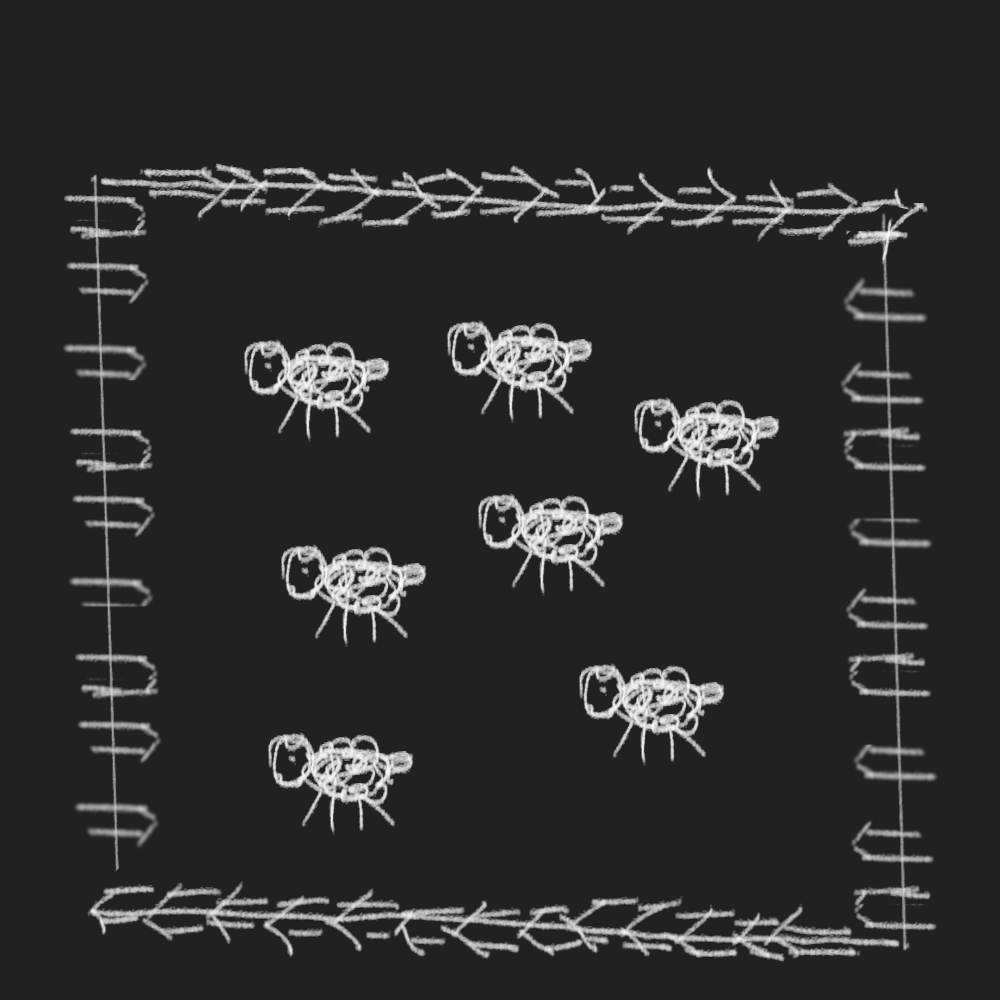
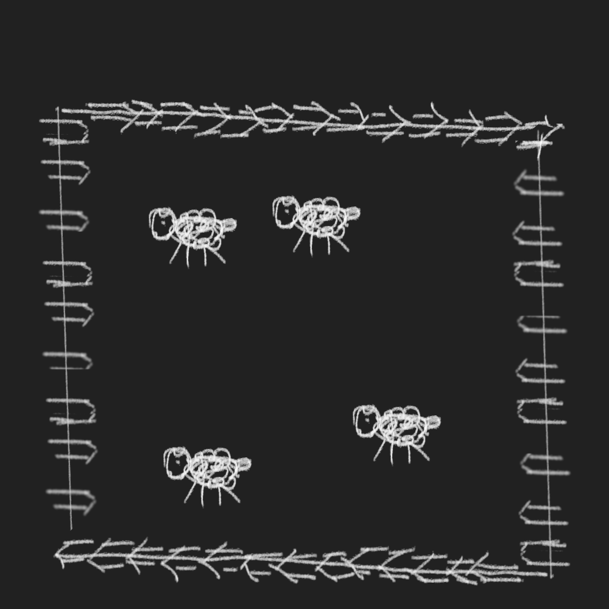
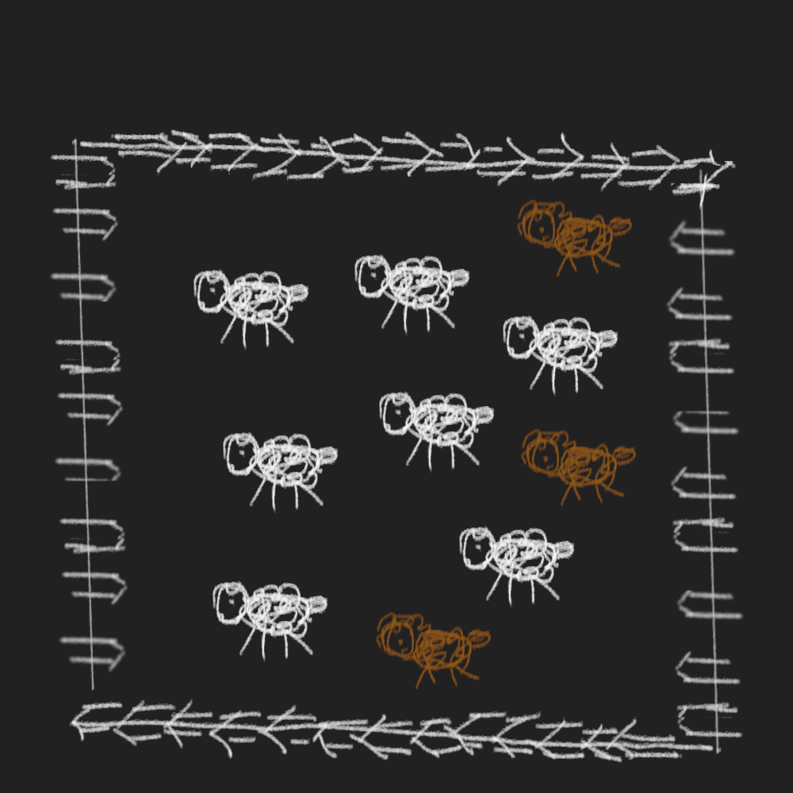
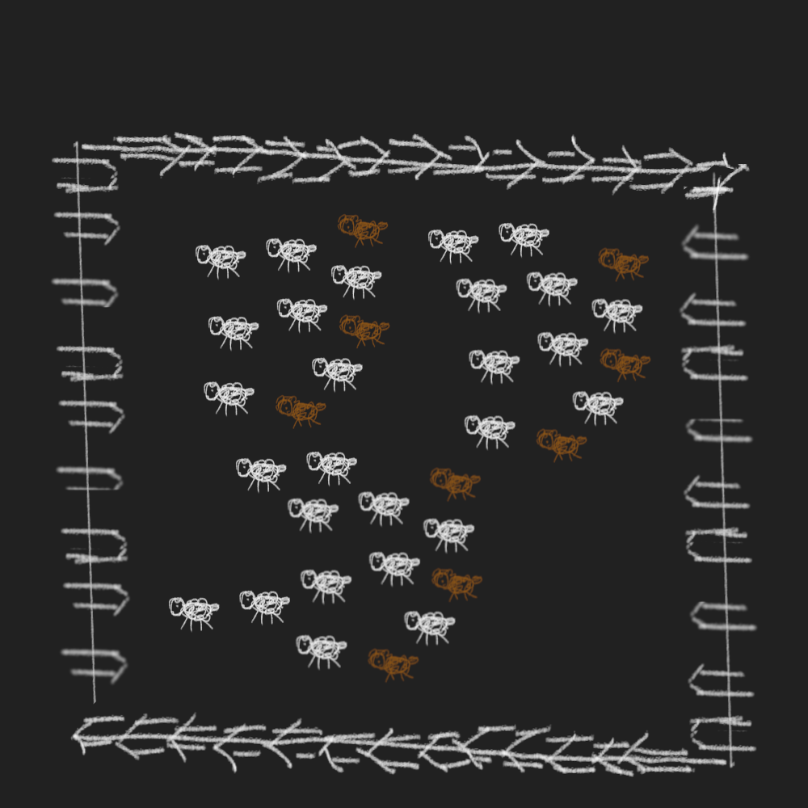
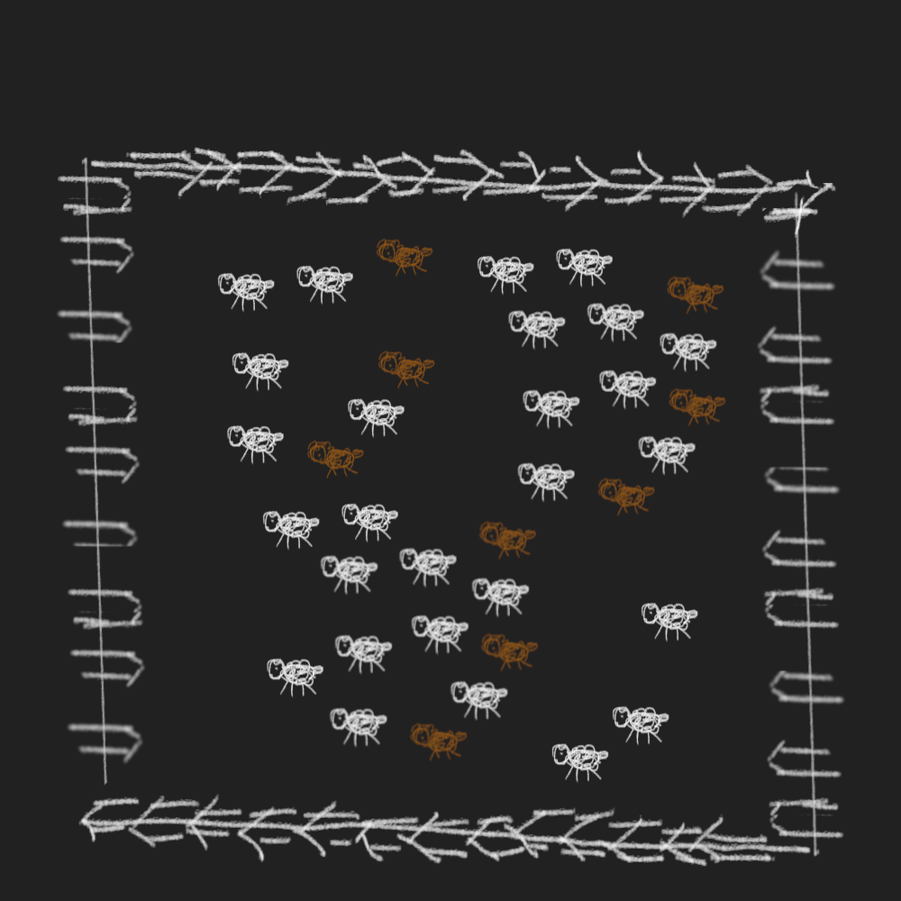
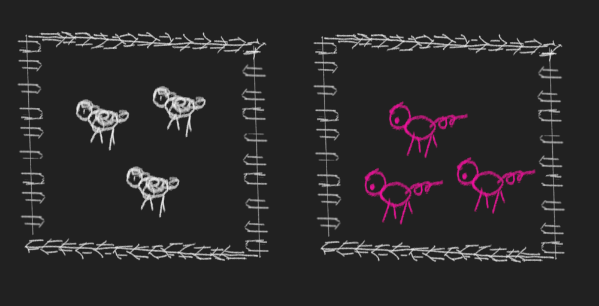
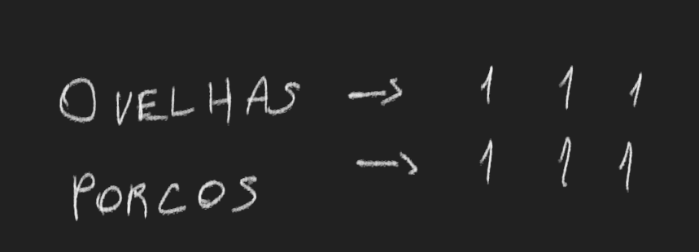
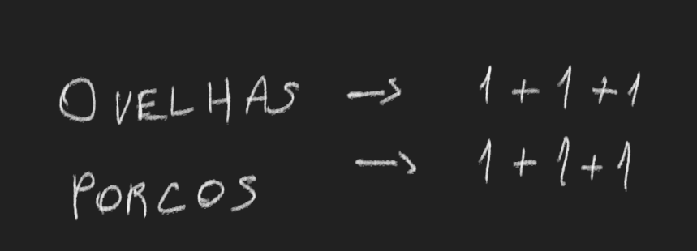
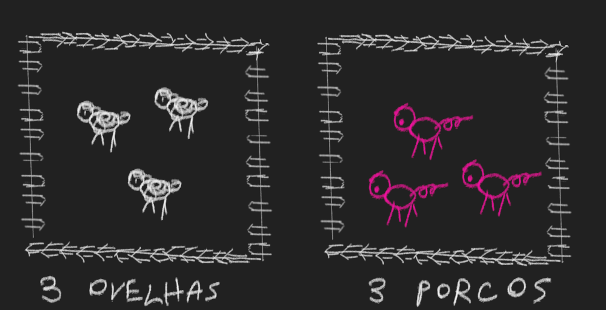

Contagem
Contar tem muito a ver com operar e representar conjuntos.
Agrupa-se elementos semelhantes em um um conjunto. Os elementos continuam sendo diferentes, mas são misturados e agrupados como similares, de acordo com algum critério arbitrário.
Olhe esses currais de ovelhas
 Intuitivamente, percebemos que os dois currais tem quantidades diferentes de ovelhas. O curral de cima é maior, tem mais ovelhas. Podemos confirmar isso assciando cada ovelha do curral de cima a uma ovelha do curral de baixo. Veremos que sobrarão ovelhas no curral de cima que não serão associadas a nenhuma ovelha do curral de baixo. Logo, o conjunto de ovelhas de cima é maior.
Lembre que cada ovelha de cada curral é única, mas, ao uní-las em um conjunto, consideramos que elas são elementos semelhantes e fungíveis.
Para ver como o critério para formar um conjunto é arbitrário, veja o seguinte curral
Aqui nem todas as ovelhas são da mesma cor. Poderíamos formar um conjunto de ovelhas marrons e outro conjunto de ovelhas brancas, assim como poderíamos formar um conjunto com ovelhas, em geral, sem distinção de cor.
Unidade
Formar conjuntos e comparar conjuntos para ver qual é maior e qual é menor é uma operação bem simples e intuitiva, principalmente para conjuntos pequenos, como os currais acima.
Isso fica menos viável quanto maior for o conjunto. Por exemplo, imagine se você quisesse descobrir qual curral tem mais ovelhas apenas olhando.
 Agora ficou hardcore💀️.
Imagine se você estivesse em uma fazenda e visse esses currais. Para representar a quantidade de ovelhas em cada curral, você desenharia uma por uma, em uma folha de papel. Isso daria um bom tempo.
Mas aí vem a tona uma característica de uma quantidade. Ela é uma abstração genérica que não depende do elemento ao qual se refere.
Olhe esses currais, um de ovelhas e outro de porcos
Ovelhas são diferentes de porcos, mas a quantidade de ovelhas é a mesma que a quantidade de porcos.
De maneira razoável, podemos chegar a conclusão que, ao invés de ter que desenhar ovelhas e porcos para representá-los, poderíamos simplesmente usar um símbolo genérico, mais fácil de se escrever, que representar qualquer coisa. Ovelha, porco, qualquer coisa. Por exemplo, o símbolo [1]
Mais uma vez, percebe-se que esses conjuntos tem o mesmo tamanho. Para cada [1] porco, existe [1] ovelha.
Aqui, ao representar a quantidade de ovelhas e a quantidade de porcos pela repetição do símbolo [1], realizamos uma operação de junção. Isto é, a quantidade de ovelhas foi definida pela junção, ou soma, de várias ovelhas, cada uma representada por [1].
Soma
Soma é junção, união. Anteriormente, representamos cada ovelha e cada porco pelo símbolo [1], depois associamos vários [1] para representar a quantidade de ovelhas e de porcos.
Explicitemos a operação que acabamos de realizar pelo símbolo [+]
Aqui estamos juntando unidades para formar uma quantidade, mas também podemos unir quantidades.
Algarismo
Algarismo é um símbolo que representa quantidade.
O símbolo [1] representa um elemento de qualquer coisa. Podemos usar mais símbolos para representar repetição de [1]. Daí surgem os algarismos indo-arábicos
[0] [1] [2] [3] [4] [5] [6] [7] [8] [9]
Os algarismos à direita do [1] representam uma repetição de [1]. Por exemplo
[2] equivale à [ [1] [1] ]
[3] equivale à [ [1] [1] [1] ]
[4] equivale à [ [1] [1] [1] [1] ]
E assim por diante
Quanto mais à direita o algarismo, maior é a quantidade que ele representa.
O [0] representa o vazio. Em um curral sem ovelhas, há [0] ovelhas. Em um curral sem porcos, há [0] porcos.
 Multiplicação